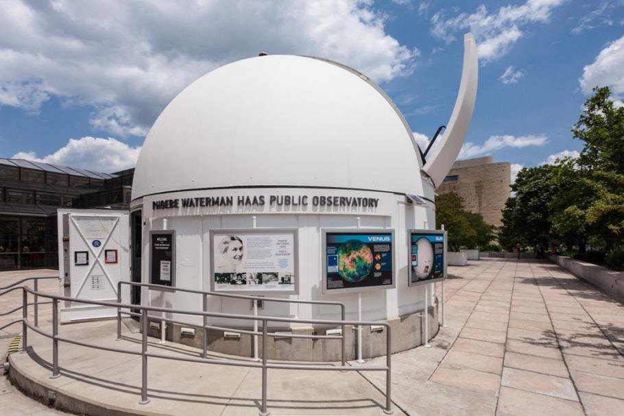

Public Observatory
About our Telescope
Our largest telescope is a 16-inch Boller & Chivens telescope, purchased in 1967 by Harvard College Observatory. It is named the Cook Memorial Telescope in memory of Chester Sheldon Cook, a long-time member of the Amateur Telescope Makers of Boston. The telescope was used by generations of students at the Harvard-Smithsonian Oak Ridge Observatory in Harvard, Massachusetts. The Cook Memorial Telescope was loaned, and later donated by Harvard, to the Museum as the primary telescope in the Phoebe Waterman Haas Public Observatory.
Our favorite objects to observe with the Cook Memorial Telescope are planets and double stars.
We also have several solar telescopes that allow observers to safely view the Sun in different types of light. Our white-light telescopes show us a view of the Sun’s surface. Our hydrogen-alpha (red light) and calcium-K (purple light) telescopes shows us the Sun’s atmosphere.